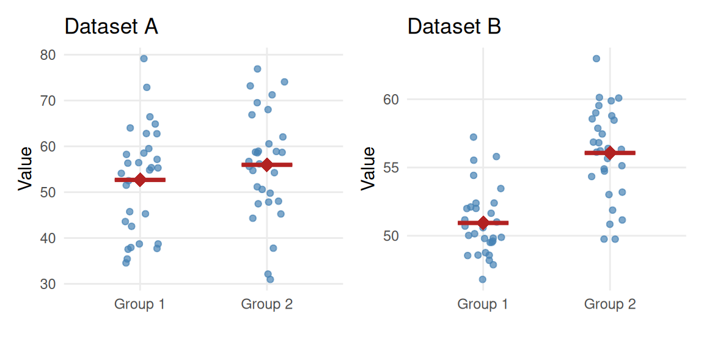

Analysis of Variance
Key Concepts
- Use ANOVA to test for a difference in means among several groups
- Explain how variation between groups and variation within groups are relevant for testing a difference in means between multiple groups.
Motivation
In a two-sample \(t\)-test (test for difference in means), we record values of one categorical variable (with two groups) and one quantitative variable. Our goal is to compare the means between the two groups.
Two sets of sample data are displayed in the figure above. In which set of sample data, A or B, is there likely to be stronger evidence of a difference between the two sample means? Why?
Analysis of Variance
In the example above, the sample mean for Group 1 was the same for both datasets, and likewise for Groups 2. However, the spread within each sample was different for the two datasets. We used the spread to decide which provided stronger evidence of a difference. Recall, the test statistic for a two-sample \(t\)-test is:
\[ t = \frac{ \overline{x}_1 - \overline{x}_2 }{ \sqrt{ \frac{ s_1^2 }{ n_1 } + \frac{ s_2^2 }{ n_2 }}} \]
In the numerator of the test statistic, we calculated the difference between the two sample means, or the spread between the two groups. In the denominator, we calculated the standard error, which is a measure of spread within the two groups. How would this test statistic change if we wanted to test if there was a difference in means between three or more groups?
ANOVA is an extension of the two-sample \(t\)-test to more than two groups.
The Analysis of Variance (ANOVA) procedure can be regarded as an extension of the two-sample \(t\)-test to more than two samples. In fact, the test statistic is formed in much the same way. The test statistic for ANOVA is an \(F\)-statistic, and has the following form.
\[ F = \frac{ \text{Spread \textit{between} group means} }{ \text{Spread \textit{within} groups}} \]
This is the same concept as our \(t\)-statistic from a two sample \(t\)-test; in fact, we can think of the difference in means (numerator of t) to be a measure of spread between the means.
Statement of hypotheses
The ANOVA hypothesis test is used to see if groups have significantly different averages. If we are considering \(k\)groups, then the hypotheses for the ANOVA test are
\[ \begin{aligned} H_0: & \ \mu_1 = \mu_2 = \ldots = \mu_k \\ H_a: & \ \text{At least one } \mu_i \text{ is different} \end{aligned} \]
Class Example 8.1: Quality control for lenses
A company that produces glass lenses would like to know if the three presses they use are producing the same average thickness in lens. They hire an engineer to test to see if the machines should be calibrated. Write the hypothesis to test this using an ANOVA hypothesis test.
Finding the test statistic
SS stands for sum of squares
MS stands for mean squares
The test statistic for an ANOVA hypothesis test is an \(F\)-statistic. To find an \(F\)-statistic, we will use an ANOVA table. An ANOVA table is used to help us compare the variability between the sample means and the variability within the samples.
| Source | df | SS | MS | F | \(p\)-value |
|---|---|---|---|---|---|
| Group | \(k-1\) | \(SS_{\text{Group}}\) | \(MS_{\text{Group}}=\frac{ \text{SSG}}{k-1}\) | \(F = \frac{MS_{\text{Group}}}{ MS_{\text{Error}}}\) | Fcdf(F-stat, 9999, df\(_{\text{Group}}\), df\(_{\text{Error}}\)) |
| Error | \(n-k\) | \(SS_{\text{Error}}\) | \(MS_{\text{Error}} = \frac{ \text{SSE}}{n-k}\) | ||
| Total | \(n-1\) | \(SS_{\text{Total}}\) |
Here are a few relationships to note as you are working with these tables:
\[ \begin{aligned} SS_{\text{Total}} &= SS_{\text{Group}} + SS_{\text{Error}}\\ df_{\text{Total}} &= df_{\text{Group}} + df_{\text{Error}}\\ MS_{\text{Group}} &= \frac{SS_{\text{Group}} }{df}\\ MS_{\text{Error}} &= \frac{SS_{\text{Error}} }{df}\\ F &= \frac{MS_{\text{Group}}}{ MS_{\text{Error}}} \end{aligned} \]
Finding the \(p\)-value
To find the \(p\)-value, you need to know the degrees of freedom for the numerator and denominator. You can find the \(p\)-value using technology like Statkey, SPSS, or a calculator.
Class Example 8.2: Quality control continued
Fill in the remaining spots in the ANOVA table below.
| Source | df | SS | MS | F | \(p\)-value |
|---|---|---|---|---|---|
| Group | 10.30 | ||||
| Error | |||||
| Total | 14 | 34.40 |
Find the \(p\)-value for the \(F\)-statistic that tests to see whether or not average glass thickness differs for each press. What are the degrees of freedom for the numerator and denominator? State your decision and provide an interpretation in the context of the problem.
Conditions to use the \(F\)-test
Conditions to use the \(F\)-test:
- We need to know that each average is approximately normal
- No group standard deviation can be more than 2 times the others
For the \(F\)-test, we need to check that each average is approximately normal (i.e.\(n_i \ge 30\)or sampling from a normal population). We also need to know that the standard deviations in each group are similar enough. To check if the standard deviations are similar enough, it is enough to make sure that no group has a standard that is larger than twice the standard deviation for another group.
Class Example 8.3: Quality control continued
Have the conditions to use an F-statistic to test if any of the presses has a different average thickness been satisfied? Explain.
Class Example 8.4: Rotten Tomatoes
Rotten Tomatoes is a website providing movie ratings and reviews. Each movie gets a “Tomatometer” score, which is “The percentage of Approved Tomatometer critics who have given this movie a positive review.” A sample of movies for seven categories was taken, and the summary statistics are provided in the table below. Does the average Tomatometer score differ by movie genre?
| Genre | \(\overline{x}\) | \(s\) | \(n\) |
|---|---|---|---|
| Action | \(44.97\) | \(25.10\) | \(31\) |
| Animation | \(60.58\) | \(26.73\) | \(12\) |
| Comedy | \(49.78\) | \(26.35\) | \(27\) |
| Drama | \(67.90\) | \(18.06\) | \(21\) |
| Horror | \(41.29\) | \(27.04\) | \(17\) |
| Romance | \(47.20\) | \(31.57\) | \(10\) |
| Thriller | \(62.38\) | \(28.66\) | \(13\) |
- What are the variables recorded in this study? Are they categorical or quantitative? Which of the variables is the independent variable? Dependent variable?
- State the appropriate hypotheses for this test.
- Are the conditions for using the \(F\)-distribution satisfied? Why or why not?
- Regardless of your previous answer, test to see whether the Tomatometer score differ significantly by movie genre (use \(\alpha = 0.05\))? Make a conclusion in context.
| Source | df | SS | MS | F | \(p\)-value |
|---|---|---|---|---|---|
| Group | \(11407.4\) | ||||
| Error | |||||
| Total | \(93268.1\) |
Class Example 8.5: Caffeine and finger tapping
Does caffeine consumption have an effect on twitch movements? To investigate this question, the following experiment was conducted. 30 subjects were randomly assigned to one of three groups, with 10 subjects in each group. The subjects were then given a tablet containing 0mg, 100mg, or 200mg of caffeine. Two hours later, they were asked to tap their finger as quickly as possible for one minute. Summary statistics are provided in the table below.
| 0 mg | 100 mg | 200 mg | |
|---|---|---|---|
| \(\overline{x}\) | \(244.8\) | \(246.4\) | \(248.3\) |
| \(s\) | \(2.394\) | \(2.066\) | \(2.214\) |
- What are the variables recorded in this study? Are they categorical or quantitative? Which of the variables is the independent variable? Dependent variable?
- Based on the summary statistics above, do you think that caffeine has an effect on finger tapping?
- State the appropriate hypotheses for this test.
- Are the conditions for using the \(F\)-distribution satisfied? Why or why not?
- Regardless of your previous answer, test to see whether caffeine consumption cause a difference in the average number of finger taps (use \(\alpha = 0.05\))? Make a conclusion in context.
| Source | df | SS | MS | F | \(p\)-value |
|---|---|---|---|---|---|
| Group | \(61.4\) | ||||
| Error | \(134.1\) | ||||
| Total |
- Is there a practical difference between the groups? Is this the same as a statistical difference?